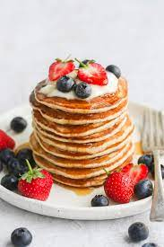

Homemade Pancakes
Description
This delicious homemade pancake batter makes about 10 pancakes. My brother is hard to please and even he loves my recipe!

Ingredients
- 1 1/2 cups all-purpose flour
- 1 1/4 cups milk
- 1 egg
- 3 tablespoons butter, melted
- 2 teaspoons baking powder
Instructions
- Mix flour, milk, egg, butter, sugar, baking powder, and salt together.
- Heat a lightly oiled griddle over low heat. Scoop 1/4 cup batter onto the griddle and cook until top and edges are dry, 3 to 4 minutes. Flip and cook until lightly browned on the other side, 2 to 3 minutes. Repeat with remaining batter.
Back to top
Back to Home page